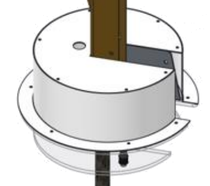

<button class="leftArrow small" ui-sref="autonomous" ng-click="updateTeleop(gearsCollectedFromHP2,
    gearsCollectedFromFloor2, fuelCollectedFromHopper2, plantedGears2, missedGears2, fuelCollectedFromFloor2,
    fuelCollectedFromHP2,estimatedPoints2,climbingStatus2);"><</button>
<div class="header" ng-class="get_match_team_color();">{{get_match_string()}}</div>
<div class="center page-title">
    <h3>Teleoperated</h3>
</div>
<div class="content" ng-init="initTeleop();">

    <p class="comments-types"> Fuel</p>
    <label><input type="checkbox" value="0" ng-model="fuelCollectedFromHopper2" />Fuel from hoppers</label>
    <label><input type="checkbox" value="0" ng-model="fuelCollectedFromFloor2" />Fuel from floor</label>
    <label><input type="checkbox" value="0" ng-model="fuelCollectedFromHP2"/>Fuel from HP</label>
    <label>Points: {{estimatedPoints2}}<br /><button ng-click="estimatedPoints2=inc_counter(estimatedPoints2, 1)" class="small">+1</button><button ng-click="estimatedPoints2=inc_counter(estimatedPoints2, 5)" class="small">+5</button><button ng-click="estimatedPoints2=dec_counter(estimatedPoints2, 5)" class="small">-5</button><button ng-click="estimatedPoints2=dec_counter(estimatedPoints2, 1)" class="small">-1</button></label>

    <p class="comments-types"> Gears</p>
    <label><input type="checkbox" value="0" ng-model="gearsCollectedFromFloor2"/>Gears from floor</label>
    <label><input type="checkbox" value="0" ng-model="gearsCollectedFromHP2"/>Gears from HP</label>
    <label>Planted: {{plantedGears2}} <button ng-click="plantedGears2=inc_counter(plantedGears2, 1)" class="small">+1</button><button ng-click="plantedGears2=dec_counter(plantedGears2, 1)" class="small">-1</button></label>
    <label>Missed: {{missedGears2}} <button ng-click="missedGears2=inc_counter(missedGears2, 1)" class="small">+1</button><button ng-click="missedGears2=dec_counter(missedGears2, 1)" class="small">-1</button></label>

    <p class="comments-types"> Climbing</p>
    <label><input type="radio" name="climb" ng-click="climbingStatus2='Did not try to climb'" checked />Nothing</label>
    <label><input type="radio" name="climb" ng-click="climbingStatus2='Climbing failed'" />Failed</label>
    <label><input type="radio" name="climb" ng-click="climbingStatus2='Climbing succeeded'" />Climbed</label>

</div>

<div class="center">
    <button ui-sref="defense" ng-click="updateTeleop(gearsCollectedFromHP2,
    gearsCollectedFromFloor2, fuelCollectedFromHopper2, plantedGears2, missedGears2, fuelCollectedFromFloor2,
    fuelCollectedFromHP2,estimatedPoints2,climbingStatus2);">Continue</button>
</div>